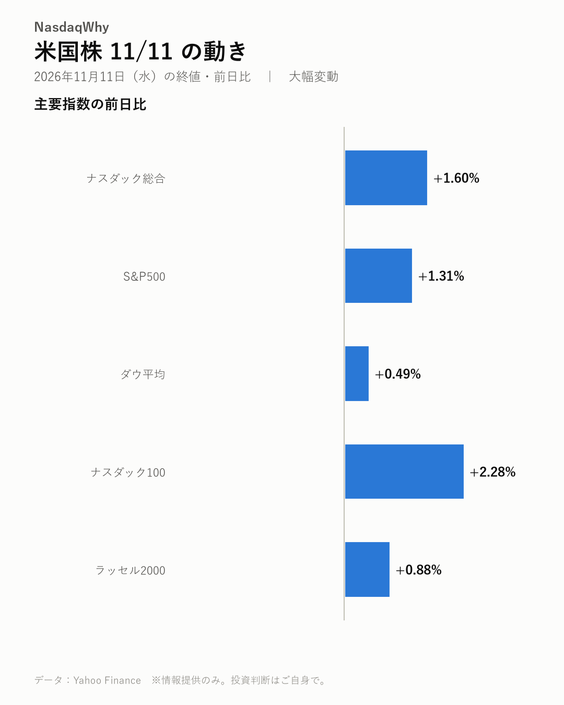
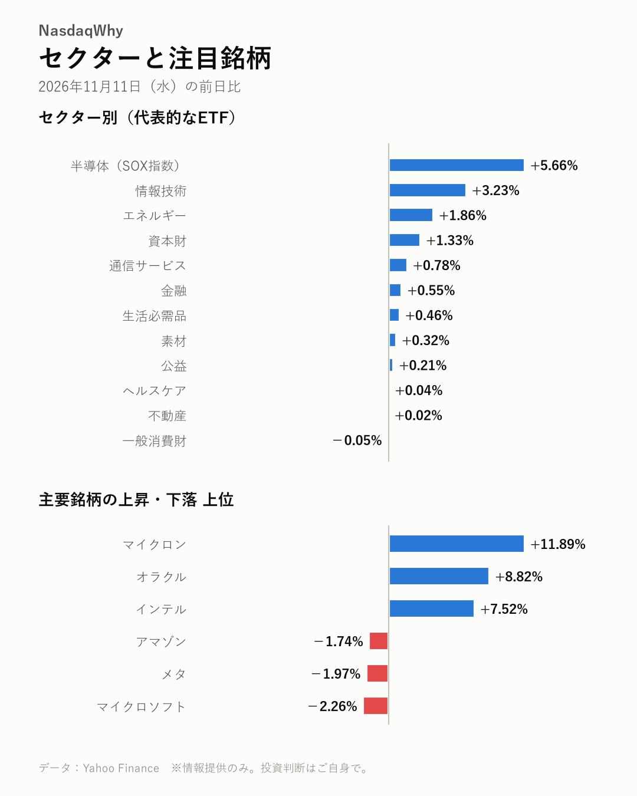

11/11の米国株：物価が強めでも、半導体株はなぜ大きく買われた？
2026年11月11日（水）の米国市場（日本時間の翌朝更新） ｜ 大幅変動
今日の疑問
物価が強めでも、半導体株はなぜ大きく買われた？
AIクラウドのコアウィーブが見通しを引き上げ、AI投資が細るとの不安が和らいだ。半導体指数は+5.66%と急伸した。物価への警戒が今後どう効くかはまだ分からず、次はFOMCを確かめたい。

主要指数
| 名前 | 終値 | 前日比 | 騰落率 |
|---|---|---|---|
| ナスダック総合 | 25,466.19 | +400.32 | +1.60% |
| S&P500 | 7,619.38 | +98.45 | +1.31% |
| ダウ平均 | 52,486.49 | +254.60 | +0.49% |
| ナスダック100 | 28,374.25 | +633.46 | +2.28% |
| ラッセル2000 | 2,846.26 | +24.88 | +0.88% |
なぜ動いた？
- コアウィーブが好決算と見通しの引き上げを示し、AI投資の失速懸念が後退した。半導体株を中心に買いが広がった。（出典：Yahoo Finance、TIKR.com、Benzinga、Yahoo Finance、CNBC TV18）
- コアウィーブのCEOがAI需要は世界の供給力を上回ると述べ、マイクロンなどメモリー株の支えになった。（出典：Yahoo Finance、Yahoo Finance）
- コアウィーブの資金調達の見直しでAI投資の借金への不安が和らぎ、オラクルに買いが入った。バーンスタインは売られすぎとの見方を示した。（出典：Yahoo Finance、Yahoo Finance、MarketWatch）
- 物価指標は強めだったが、ハイテク株の上昇がそれを上回った。インフレへの警戒は残っている。（出典：Invezz、Yahoo Finance UK）
深掘り：大きく動いた背景
前日の米国株は半導体株が相場をけん引した。SOX指数は+5.66%と大きく上げ、ナスダック100は+2.28%。マイクロンは+11.89%、AMDは+7.32%、インテルは+7.52%と急伸した。 きっかけはAIクラウドのコアウィーブの決算だ。同社は見通しを引き上げ、AI投資が細るとの懸念が和らいだ。CEOはAI需要が世界の供給力を上回ると述べ、メモリー株の追い風になった。オラクルも+8.82%と買われた。コアウィーブの資金調達の見直しで、AI投資の借金への不安が薄れたとの見方が出ている。 別の見方もある。物価指標は強めで、インフレへの警戒を抱えたままの上昇だ。エヌビディアは格下げやフアンCEOをめぐる不透明感があるなかで+2.87%。マイクロソフトは-2.26%、アマゾンやメタも下げたが、明確な材料は見当たらない。AMDはサーバーのDRAM使用を減らす技術を示した。中国CXMTの増産でDRAMがだぶつくとの警告も出ている。 買い戻しが続くかはまだ分からない。次はFOMCで金利の方針を確かめたい。メモリーの需給を左右する各社の増産の動きも点検が要る。
セクター
半導体（SOX指数）は+5.66%、情報技術は+3.23%と大きく上げた。エネルギーは+1.86%、資本財は+1.33%。一般消費財とヘルスケア、不動産はほぼ横ばいだった。
- 騰落率の高い順：半導体（SOX指数） +5.66%、情報技術 +3.23%、エネルギー +1.86%
- 騰落率の低い順：一般消費財 -0.05%、不動産 +0.02%、ヘルスケア +0.04%

注目銘柄
マイクロンは+11.89%と急伸し、AMDは+7.32%、インテルは+7.52%。オラクルは借金への不安が和らぎ+8.82%。マイクロソフトは-2.26%と下げたが、明確な材料は見当たらない。
- 上昇：マイクロン（MU）+11.89%、オラクル（ORCL）+8.82%、インテル（INTC）+7.52%
- 下落：マイクロソフト（MSFT）-2.26%、メタ（META）-1.97%、アマゾン（AMZN）-1.74%
半導体トピック
- SK hynixが次世代HBMの歩留まりを高め、サムスンやマイクロンとの競争が激しい。（Chosunbiz、Yahoo Finance）
- AMDがサーバーのDRAM使用を大きく減らす技術を示した。（Tom's Hardware、머니투데이）
- 中国CXMTの増産でDRAMが供給過剰になりうるとの警告が出た。（XenoSpectrum、digitimes）
関連市場
| 名前 | 終値 | 前日比 | 騰落率 |
|---|---|---|---|
| 米10年債利回り | 4.998% | +0.015pt | ― |
| ドル円 | 159.82 | +1.84 | +1.16% |
| 金先物 | 3,991.50 | -38.70 | -0.96% |
| 原油先物(WTI) | 86.43 | +0.39 | +0.45% |
| ビットコイン | 74,631.19 | +911.07 | +1.24% |
米10年債利回りは4.998%で、前日比+0.015ポイント。ドル円は159.82円とドル高・円安が進んだ。金先物は-0.96%、原油先物(WTI)は+0.45%、ビットコインは+1.24%。
今後の注目
- 12/9（水） FOMCの金融政策発表。強めの物価をどう受け止めるか（公式発表）
- 中国CXMTの増産がDRAMの需給をどう変えるか（XenoSpectrum、digitimes）
- AMDのDRAM使用を減らす技術の広がり方（Tom's Hardware、머니투데이）
出典（見出し）
- Yahoo Finance：MU, AMD, AVGO, Other Chip Stocks Surge As CoreWeave Earnings Reignite AI Trade — Nasdaq-100 Futures Jump（記事）
- TIKR.com：Micron Soars 10%, SK hynix Up 9% as CoreWeave Raises Outlook on “A Breakout Quarter”（記事）
- Benzinga：Micron Stock Jumps 13% as CoreWeave Outlook Eases AI Spending Fears（記事）
- Yahoo Finance：Nvidia stock rebounds, chip stocks surge as CoreWeave earnings boost AI trade（記事）
- CNBC TV18：US stock market today: Nasdaq futures rally as CoreWeave earnings lift AI stocks（記事）
- Yahoo Finance：Micron, Sandisk Soar as CoreWeave CEO Says AI Demand Outpaces World's Capacity（記事）
- Yahoo Finance：Micron Stock Surges After CoreWeave's AI Earnings Surprise（記事）
- Yahoo Finance：Oracle Stocks Climb 7.2% as CoreWeave's Funding Reset Eases AI Debt Fears（記事）
- Yahoo Finance：Bernstein’s $325 Target Says Oracle’s Selloff Went Too Far（記事）
- MarketWatch：Oracle’s stock is totally misunderstood and should be a ‘go-to’ AI play, says this analyst（記事）
- Invezz：Nvidia, AMD and Intel stocks rally despite hot CPI: what changed overnight?（記事）
- Yahoo Finance UK：US Stock Futures Advance as CoreWeave Earnings Lift Technology Shares Despite Inflation Concerns: Dow Jones, S&P, Nasdaq, Wall Street（記事）
- Chosunbiz：SK hynix tops 70% HBM4 yield, sharpening race with Samsung and Micron（記事）
- Yahoo Finance：SK hynix Rides the AI Data Center Boom and HBM4 Ramp-Up（記事）
- Tom's Hardware：AMD shares how it can retain 95% of server performance with just half the DRAM, sidestepping memory shortages with MEXT — tech powers over 100 servers already running, with plans to expand to 2,000 servers in 2027（記事）
- 머니투데이：AMD unveils software to cut server DRAM use by up to 75%, raising questions about its impact on Samsung and SK hynix [IT buzz]（記事）
- XenoSpectrum：Ex-Nanya Chief Warns China's CXMT Expansion Could Flood DRAM Market Within Two Years（記事）
- digitimes：TSMC unlikely to enter 3D DRAM; CXMT expansion a bigger threat（記事）
データ：Yahoo Finance